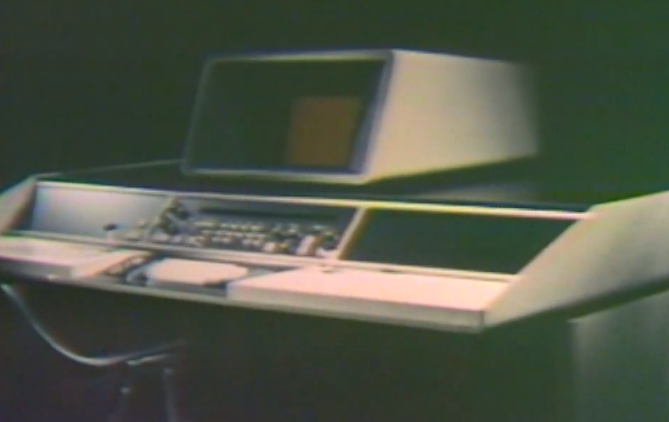
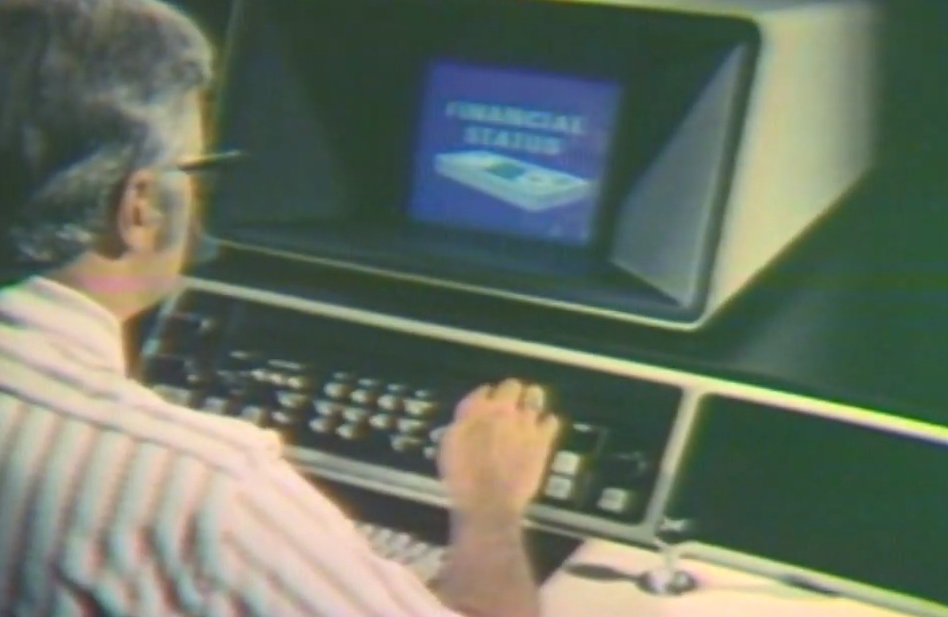
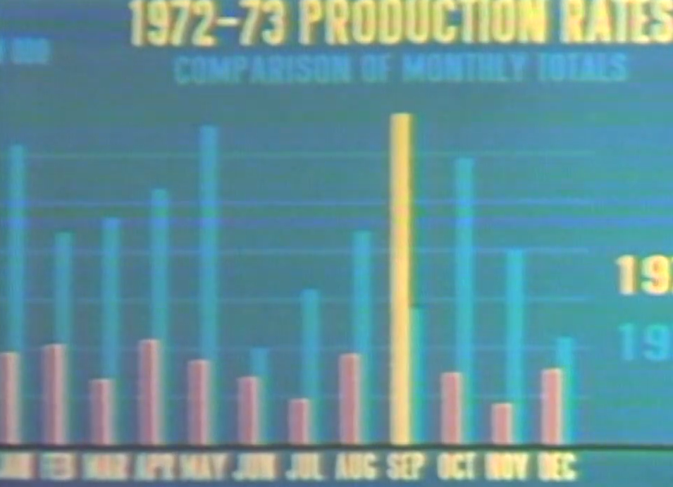

Genigraphics 100 Presentation Graphics Console
A room-sized slide studio worked with banks of knobs and joysticks — the direct ancestor of PowerPoint

Overview
Genigraphics began as a General Electric computer-graphics system, developed in the late 1960s for NASA to use in space-flight simulation, and in 1973 GE's Computed Images System & Services (CISS) division delivered the first commercial presentation-graphics system — the 100 Series — to Amoco Oil's corporate headquarters. Built on DEC's PDP-11 minicomputers, the 100 was not a desktop tool: it was a room-sized slide studio. The user composed charts, titles and diagrams on a vector display, and a Forox film recorder then output the result onto 35mm or 72mm film at up to 2,000-line resolution (later 4,000 and 8,000 lines by altering the recorder's scanning). Genigraphics grew into a service bureau with 24 offices worldwide; GE divested the division in 1982, and in 1988 Microsoft and Genigraphics struck the partnership that embedded Genigraphics colour palettes, gradients, clip art and a "Send to Genigraphics" command into PowerPoint.
Deep dive
The original 100 and 100A used "an array of buttons, dials, knobs and joysticks, along with a built-in keyboard, as the means of user interface." This is a dedicated control surface in the pre-WIMP sense: dozens of discrete physical controls, each bound to one transformation — a dial for size, a joystick for position — rather than a single general-purpose pointer and a menu. Drawing with such a computer meant working the panel with both hands, watching the result on the vector screen and adjusting the panel again.
The later 100B, C, D, D+ and D+/GVP models "replaced the knobs and dials with an on screen, text based menu system, a graphics tablet and a pen"; the pen/tablet combination later gave way to a mouse-like device. The museum rarely gets to show the physical-panel-to-screen transition happening inside one product family: the dials were abandoned in favour of menus, and then the tablet in favour of a mouse.
Presentations were stored on random-access DECtape; a DECwriter serial terminal handled media initialisation and modem-to-modem transfers. The product's endpoint was always physical film, not pixels — a full-screen-size slide for projection.
PowerPoint 2.0 was designed for Genigraphics film recorders and "shipped with Genigraphics colour palettes, schemes, and the distinctively Genigraphics colour-gradient backgrounds," along with a "Send to Genigraphics" menu item that wrote the file to floppy or transmitted it by modem to a bureau. PowerPoint 3.0 incorporated clip art and templates produced by Genigraphics artists and used Genigraphics chart styles. Within three and a half months, Genigraphics slide orders from PowerPoint accounted for ten percent of revenue at its service centres. The desktop default look of a corporate slide is, in a direct line, descended from this console.
The computer-generated scenes for The Last Starfighter (1984) were calculated on a Cray X-MP and mastered on a Genigraphics film recorder — a pairing with the museum's Evans & Sutherland Digistar exhibit, whose laboratory prototype generated starfields for Star Trek II: The Wrath of Khan. In both cases a room-sized graphics system ended up on a cinema screen.
Team & pioneers
- General Electric — Computed Images System & Services (CISS). Developed the computer-graphics system and delivered the first 100 Series to Amoco in 1973.
- Genigraphics Corporation. The divested company (1982–1989) that sold 100B–D+ systems and ran the slide service bureaus.
- Robert Gaskins / Microsoft Graphics Business Unit. Negotiated the 1988 PowerPoint partnership.
- Michael Beetner. Genigraphics Director of Marketing Planning, who initiated the Microsoft partnership in 1987.
Media


Sources
- Genigraphics — Wikipedia
- Robles-Anderson, Erica & Svensson, Patrik. "'One Damn Slide After Another': PowerPoint at Every Occasion for Speech." Computational Culture 5 (2016)
- Gaskins, Robert. Sweating Bullets: Notes about Inventing PowerPoint. Vinland Books, 2012
- NASA Technical Reports, Spinoff 1987 — Business Graphics